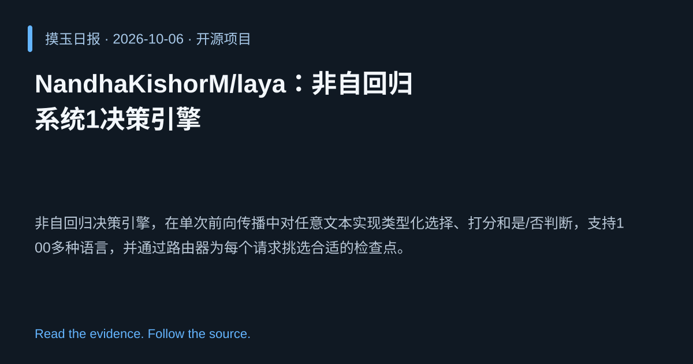

2026-10-06 · Asia/Shanghai · 开源项目 · #10
NandhaKishorM/laya：非自回归系统1决策引擎
NandhaKishorM/laya
非自回归决策引擎，在单次前向传播中对任意文本实现类型化选择、打分和是/否判断，支持100多种语言，并通过路由器为每个请求挑选合适的检查点。
为什么值得关注
一次前向完成多语言多任务决策，显著降低延迟和算力需求，适用于实时对话和跨语言应用。
- 单次前向即可完成选择、打分和二元判断，省去多轮推理。
- 支持100+语言，路由器自动选取最合适的模型检查点。
- 基于非自回归架构，提升推理速度和吞吐量。

热度 25.0 / 100；排名与评分保留该期记录。